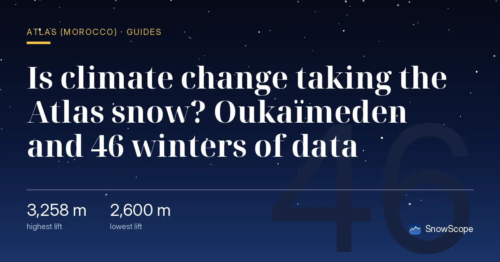

Is climate change taking the Atlas snow? Oukaïmeden and 46 winters of data
The Atlas holds snow in a dry climate where a single storm can fill the season or a mild winter can erase it. Across 46 winters, one pattern emerges clearly at the highest peaks: the snow season is shrinking. Above 2,500 m, where Oukaïmeden sits, winters now see about 17 fewer days with snow cover than a generation ago.
See the live snow forecast for Oukaïmeden in the SnowScope appSnow depth, powder alerts and the 3D map, free.
What we measured
SnowScope looked at nine locations across the three Atlas ski areas—Oukaïmeden, Michlifen and Jbel Hebri—from 1,870 m to 3,258 m, covering winters from 1980-81 to 2025-26. We counted snow days (days with at least 5 cm on the ground) and tracked the deepest snow each season. The data comes from reconstruction of past winters corrected for each location's height.
Actual snow at any single spot can vary; Saharan dust, wind drift and local terrain all matter. But with 46 winters and nine points across three resorts, broad patterns do emerge.
The highest peaks are losing their season
Above 2,500 m, the typical winter had 145 snow days in the first 15 winters of our record and 128 in the last 15—a drop of 12 %. More tellingly, the decline runs at about 8.8 snow days per decade and shows the same downward signal at all three high-altitude points we studied. The deepest snow also fell, from 102 cm to 92 cm, though this change is less certain in the data.
Why does the summit show it first? Above 2,500 m, snow often stays for months, making a shortened season easy to spot. The Atlas sun is intense and the air dry; a few degrees of extra warmth in spring shortens the season noticeably. Lower down, where snow rarely lasts weeks, such a shift would be invisible beneath the larger year-to-year swings.
Lower elevations are harder to read
Between 1,500 m and 2,500 m, snow is sparse. A typical winter sees only a few weeks with 5 cm on the ground. Here the picture is mixed. The trend suggests a loss of about 1.7 snow days per decade, but comparing the first 15 winters with the last 15 shows little change, and no single point meets the bar for a clear signal. At these heights, a few big storms shape each winter so strongly that 46 years of data cannot yet separate climate shift from natural variability.
In the Atlas, elevation matters: the border between predictable decline and weather chaos sits around 2,500 m.
Some seasons are outliers
Atlas winters swing wildly. Across the nine locations, medians have ranged from just 4 snow days in 2023-24 to 100 in 2008-09. The poorest season in the entire 46-year record was recent: 2023-24. Yet 2025-26, which ended just months before this data was recorded, ranked among the five snowiest with 48 snow days. Two of the three worst winters on record are from the last four years, but the worst and best seasons are still separated by a factor of 25.
What drives Atlas snow
Researchers tie Atlas snow to pressure patterns over the Atlantic, chiefly the North Atlantic Oscillation. The mountains feed the water supply downstream: snowmelt fills rivers and groundwater for the Marrakech plains. Studies project that by mid-century the Rheraya valley below Toubkal will warm by 1.4 to 2.6 °C and see 22 % to 31 % less winter precipitation. River flow could fall by 19 % to 63 %, mostly because snow persists for a shorter time. At the continental scale, the Mediterranean is a climate change hot spot where up to 40 % of winter precipitation could disappear locally.
What this means for skiers now
Oukaïmeden remains the only Atlas resort high enough for a reliable snow season. The trend shows it is becoming less reliable, but on a year-to-year basis you can still catch good conditions. Storm-to-storm changes matter more than the long-term shift: check SnowScope after each winter weather system, and plan to ski within days of snowfall because melt happens fast. Lower resorts such as Michlifen depend on cold storms that bring the snow line down; always check the forecast before you go.
Tips for skiers
- Watch the live snow map closely after each Atlantic storm reaches the Atlas; conditions change fast.
- Go within two or three days of snow: at these heights, the sun and dry air melt cover rapidly between storms.
- Oukaïmeden at 2,660 m is the only resort reliably above the shrinking zone; lower areas need a cold, wet system.
- Before heading off-piste or onto Toubkal, ask local mountain guides about snow stability and rockfall risk; Morocco has no public avalanche bulletin available on SnowScope.
- In dry years like 2023-24, the entire season can be thin; rocks can lurk beneath shallow cover.
About these numbers
Resort snow depths are the deepest snow on the resort's upper slopes on the date shown; they are estimates for an area, not a measurement at one point. Forecasts can change. Always read the official avalanche bulletin before going off-piste.
Cite this report
For research, teaching or the press: the numbers and charts are free to reuse under CC BY 4.0 with this citation.
SnowScope (2026), Is climate change taking the Atlas snow? Oukaïmeden and 46 winters of data, https://snowscope.app/blog/en/2026/11/atlas-snow-climate-change-oukaimeden-46-winters.html, accessed 2026-11-09
SnowScope (Atlas Labs). (2026, November 9). Is climate change taking the Atlas snow? Oukaïmeden and 46 winters of data. SnowScope snow reports. https://snowscope.app/blog/en/2026/11/atlas-snow-climate-change-oukaimeden-46-winters.html
BibTeX
@misc{snowscope2026atlassnowclimatechangeou,
author = {{SnowScope (Atlas Labs)}},
title = {Is climate change taking the Atlas snow? Oukaïmeden and 46 winters of data},
year = {2026},
month = nov,
howpublished = {\url{https://snowscope.app/blog/en/2026/11/atlas-snow-climate-change-oukaimeden-46-winters.html}},
note = {Published 2026-11-09 11:38 UTC; accessed 2026-11-09}
}· CC BY 4.0 · Methods, data and tools →
Oukaïmeden: snow and temperature by height, this winter vs last (tools) →
Follow Oukaïmeden
Free: a message when fresh snow is coming, and the forecast every morning.
More snow reports

No snow yet at Oukaïmeden on 12 November. The Atlas peaks sit bare; the winter season typically peaks in March with 58 cm at the top.

Oukaïmeden is 50 km from Marrakech. December snow is thin and unpredictable: plan around storms, not the calendar. Data from 13 November 2026.

How low the snow came, when it left, and how this winter compares with 2008-09 and the dry years.